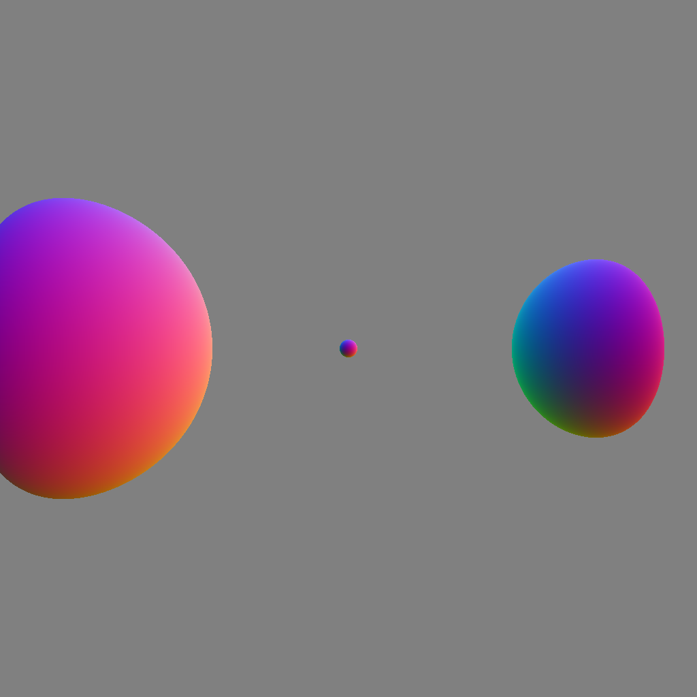
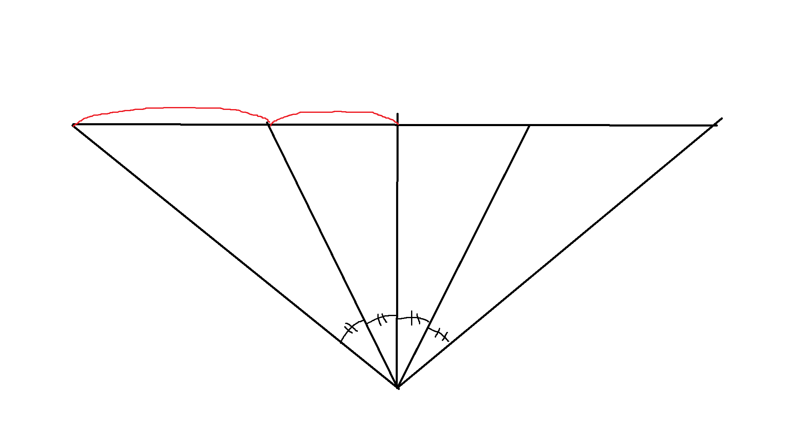
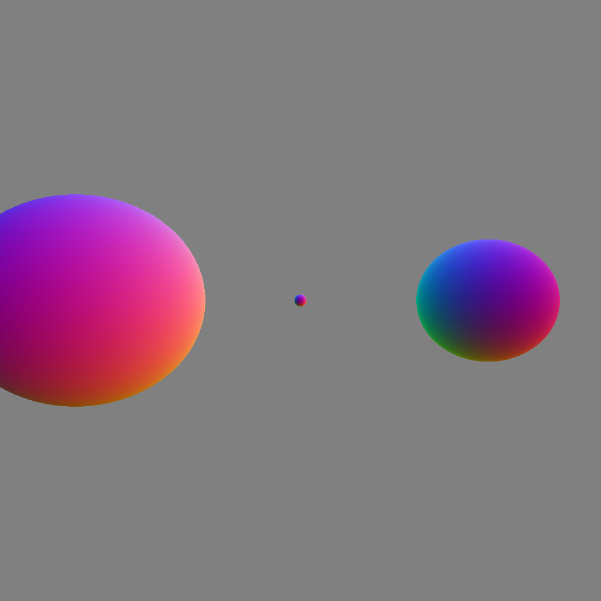
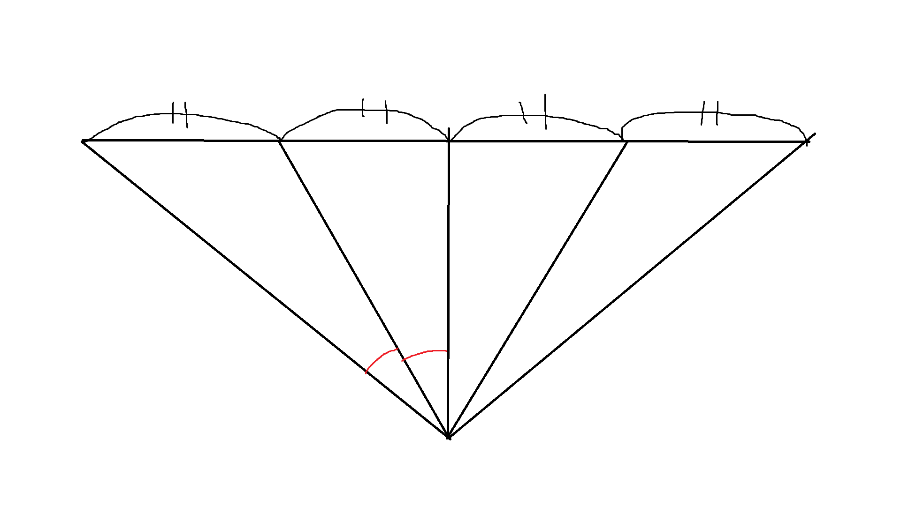

2 - raytracer 프로젝트 - 카메라
2024. 6. 17.|2024. 10. 6.
이 글은 raytracer 시리즈입니다.
목차
유틸
util.h
#pragma once
#include <stddef.h>
void *alloc(size_t size);
void *memdup(void *mem, size_t length);
우선 공통으로 쓰일 부분들을 따로 함수로 빼 두자.
util.c
#include "util.h"
#include <stdio.h>
#include <stdlib.h>
#include <string.h>
void *alloc(size_t size) {
void *const result = malloc(size);
if (!result) {
fprintf(stderr, "Failed to allocate memory\n");
exit(EXIT_FAILURE);
}
return result;
}
void *memdup(void *mem, size_t length) {
void *const result = alloc(length);
memcpy(result, mem, length);
return result;
}
원근 카메라
이전 글에서 간이로 간단한 직교 카메라를 구현했었다.
카메라를 바꾸고 비교하기 위해 먼저 씬을 좀 바꿔보자.
--- ../../2024-06-16-the-raytracer-project-start/2/main.c
+++ main.c
@@ -15,18 +15,24 @@
float radius;
} sphere_t;
-const float orthogonal_camera_scale = 2.0f;
+const float orthogonal_camera_scale = 3.0f;
const f3_t camera_position = {0, 0, 0};
const f3_t camera_direction = {0, 1, 0};
const bmp_pixel_t white = {255, 255, 255};
-const sphere_t sphere = {{0, 5, 0}, 1};
+const sphere_t spheres[] = {
+ {{-2, 3, 0}, 1},
+ {{3, 5, 0}, 1},
+ {{0, 5, 0}, 0.1f},
+};
static inline float sqr(float x) { return x * x; }
-bool collide(ray_t ray, sphere_t sphere, f3_t *out_normal) {
+bool collide(ray_t ray, sphere_t sphere, f3_t *out_normal,
+ float *out_distance) {
// 카메라가 구 안에 있는지
if (f3_length(f3_sub(ray.origin, sphere.center)) < sphere.radius) {
*out_normal = f3_mul1(ray.direction, -1);
+ *out_distance = 0;
return true;
}
@@ -90,6 +96,8 @@
// 하지만 길이가 1이 아닐 수 있으므로 정규화를 해야 함
*out_normal = f3_normalize(*out_normal);
+ *out_distance = t;
+
return true;
}
@@ -100,9 +108,17 @@
const f3_t origin = f3_add(camera_position, f3(x, 0, z));
const ray_t ray = {origin, camera_direction};
- f3_t normal;
- if (!collide(ray, sphere, &normal)) {
- return white;
+ f3_t tmp_normal;
+ f3_t normal = {0, 0, 0};
+ float tmp_distance;
+ float distance = -1.0f;
+ for (size_t i = 0; i < sizeof(spheres) / sizeof(spheres[0]); i++) {
+ if (collide(ray, spheres[i], &tmp_normal, &tmp_distance)) {
+ if (distance < tmp_distance) {
+ distance = tmp_distance;
+ normal = tmp_normal;
+ }
+ }
}
return (bmp_pixel_t){
// normal의 각 요소는 -1에서 1 사이이므로, 0에서 255 사이로 만든다
이제 카메라를 아주 간단히 바꿔보자.
--- ../0/main.c
+++ main.c
@@ -15,7 +15,7 @@
float radius;
} sphere_t;
-const float orthogonal_camera_scale = 3.0f;
+const float perspective_camera_fov = 1.5707963267948966f; // 90도
const f3_t camera_position = {0, 0, 0};
const f3_t camera_direction = {0, 1, 0};
const bmp_pixel_t white = {255, 255, 255};
@@ -102,11 +102,12 @@
}
bmp_pixel_t renderer(void *context, float x_on_image, float y_on_image) {
- const float x = (2.0f * x_on_image - 1.0f) * orthogonal_camera_scale;
- // y_on_image는 높을수록 아래인데 z는 높을수록 위이므로, 반대로 처리
- const float z = -(2.0f * y_on_image - 1.0f) * orthogonal_camera_scale;
- const f3_t origin = f3_add(camera_position, f3(x, 0, z));
- const ray_t ray = {origin, camera_direction};
+ const float x =
+ tanf((2.0f * x_on_image - 1.0f) * perspective_camera_fov / 2.0f);
+ const float z =
+ -tanf((2.0f * y_on_image - 1.0f) * perspective_camera_fov / 2.0f);
+ const f3_t direction = f3_normalize((f3_t){x, 1, z});
+ const ray_t ray = {camera_position, direction};
f3_t tmp_normal;
f3_t normal = {0, 0, 0};
여기에서 fov란 Field Of View, 시야각을 의미한다.
일단 여기에는 문제가 좀 있다. 딱 봐도 이상해 보인다.

각도를 기준으로 하면 평면에 투영했을 때 거리가 달라진다.
--- ../1/main.c
+++ main.c
@@ -102,10 +102,9 @@
}
bmp_pixel_t renderer(void *context, float x_on_image, float y_on_image) {
- const float x =
- tanf((2.0f * x_on_image - 1.0f) * perspective_camera_fov / 2.0f);
- const float z =
- -tanf((2.0f * y_on_image - 1.0f) * perspective_camera_fov / 2.0f);
+ const float tan_fov = tanf(perspective_camera_fov / 2.0f);
+ const float x = (2.0f * x_on_image - 1.0f) * tan_fov;
+ const float z = -(2.0f * y_on_image - 1.0f) * tan_fov;
const f3_t direction = f3_normalize((f3_t){x, 1, z});
const ray_t ray = {camera_position, direction};
그렇다면 거리를 기준으로 하면 어떨까?
각도가 달라진다. 어떻게 하든 왜곡은 생기지만, 이는 어쩔 수 없는 현상이다.

어쨌든 본격적으로 카메라를 구현해보자.
ray.h
#pragma once
#include "f3.h"
typedef struct ray {
f3_t origin;
f3_t direction;
} ray_t;
일단 ray.h를 공통으로 쓰도록 빼 두고,
camera.h
#pragma once
#include "ray.h"
/**
* @brief get ray from (x, y) in image
*/
typedef ray_t (*camera_get_ray_t)(void *context, float x, float y);
typedef struct camera {
void *context;
camera_get_ray_t get_ray;
} camera_t;
typedef enum camera_fov_mode {
FOV_X,
FOV_Y,
} camera_fov_mode_t;
camera_t perspective_camera(f3_t camera_position, float yaw, float pitch,
float roll, float aspect_ratio,
camera_fov_mode_t fov_mode, float fov);
camera_t perspective_camera_by_position(f3_t camera_position,
f3_t look_at_position, float roll,
float aspect_ratio,
camera_fov_mode_t fov_mode, float fov);
typedef enum camera_size_mode {
SIZE_WIDTH,
SIZE_HEIGHT,
} camera_size_mode_t;
camera_t orthogonal_camera(f3_t camera_position, float yaw, float pitch,
float roll, float aspect_ratio,
camera_size_mode_t size_mode, float size);
camera_t orthogonal_camera_by_position(f3_t camera_position,
f3_t look_at_position, float roll,
float aspect_ratio,
camera_size_mode_t size_mode,
float size);
카메라의 타입과 카메라를 만드는 함수를 선언한다.
위에서는 가로/세로 비율이 같아서 fov 하나로 가로/세로에 같은 fov를 사용했지만, 가로/세로 비율이 다르면 각자 다른 fov를 사용해야 한다.
가로/세로 비율(이하 종횡비)이 주어지면 가로나 세로 fov 중 한 쪽에 따라 나머지 한 쪽이 정해진다.
즉, 가로 fov나 세로 fov 중 하나만 받아도 된다는 의미이다.
여기서 camera_fov_mode_t가 주어진 fov가 가로인지 세로인지 결정하는 데 쓰인다.
perspective_camera.c
#include "camera.h"
#include <math.h>
#include "f3x3.h"
#include "util.h"
typedef struct perspective_camera_context {
float tan_fov_x;
float tan_fov_y;
f3_t origin;
f3x3_t rotation;
} perspective_camera_context_t;
static ray_t get_ray(void *context, float x, float y) {
perspective_camera_context_t *const ctx = context;
const float direction_x = ctx->tan_fov_x * (x * 2.0f - 1.0f);
const float direction_y = 1.0f;
const float direction_z = -ctx->tan_fov_y * (y * 2.0f - 1.0f);
const f3_t direction = {direction_x, direction_y, direction_z};
const f3_t normal = f3_normalize(direction);
const f3_t rotated = f3x3_mul_f3(normal, ctx->rotation);
const ray_t result = {ctx->origin, rotated};
return result;
}
camera_t perspective_camera(f3_t camera_position, float yaw, float pitch,
float roll, float aspect_ratio,
camera_fov_mode_t fov_mode, float fov) {
perspective_camera_context_t context;
if (fov_mode == FOV_X) {
const float half_fov_x = fov / 2;
context.tan_fov_x = tanf(half_fov_x);
context.tan_fov_y = context.tan_fov_x / aspect_ratio;
} else {
const float half_fov_y = fov / 2;
context.tan_fov_y = tanf(half_fov_y);
context.tan_fov_x = context.tan_fov_y * aspect_ratio;
}
context.origin = camera_position;
context.rotation = f3x3_rotate(yaw, pitch, roll);
const camera_t result = {memdup(&context, sizeof(context)), get_ray};
return result;
}
이렇게 카메라를 간단히 구현 후, 이 카메라를 적용해서 테스트 해 보자.
--- ../2/main.c
+++ main.c
@@ -1,20 +1,18 @@
#include <math.h>
#include <stdint.h>
-#include <stdio.h>
+#include "../../camera.h"
#include "../../f3.h"
+#include "../../ray.h"
#include "../../write_image.h"
-typedef struct ray {
- f3_t origin;
- f3_t direction;
-} ray_t;
-
typedef struct sphere {
f3_t center;
float radius;
} sphere_t;
+const size_t width = 960;
+const size_t height = 540;
const float perspective_camera_fov = 1.5707963267948966f; // 90도
const f3_t camera_position = {0, 0, 0};
const f3_t camera_direction = {0, 1, 0};
@@ -102,12 +100,10 @@
}
bmp_pixel_t renderer(void *context, float x_on_image, float y_on_image) {
- const float tan_fov = tanf(perspective_camera_fov / 2.0f);
- const float x = (2.0f * x_on_image - 1.0f) * tan_fov;
- const float z = -(2.0f * y_on_image - 1.0f) * tan_fov;
- const f3_t direction = f3_normalize((f3_t){x, 1, z});
- const ray_t ray = {camera_position, direction};
+ camera_t *const camera = context;
+ const ray_t ray = camera->get_ray(camera->context, x_on_image, y_on_image);
+
f3_t tmp_normal;
f3_t normal = {0, 0, 0};
float tmp_distance;
@@ -133,5 +129,8 @@
return 1;
}
- write_image(argv[1], renderer, NULL, 1024, 1024);
+ camera_t camera =
+ perspective_camera(f3(0, 0, 0), 0, 0, 0, width / (float)height, FOV_X,
+ perspective_camera_fov);
+ write_image(argv[1], renderer, &camera, width, height);
}
이미지 가로/세로 비율을 바꿔도 대충 잘 되는 것 같다.
--- ../3/main.c
+++ main.c
@@ -130,7 +130,7 @@
}
camera_t camera =
- perspective_camera(f3(0, 0, 0), 0, 0, 0, width / (float)height, FOV_X,
- perspective_camera_fov);
+ perspective_camera(f3(0, 0, 0), 0.2f, 0.1f, 0.5f, width / (float)height,
+ FOV_X, perspective_camera_fov);
write_image(argv[1], renderer, &camera, width, height);
}
카메라 회전을 넣어도 마찬가지.
직교 카메라
orthogonal_camera.c
#include "camera.h"
#include "f3x3.h"
#include "util.h"
typedef struct orthogonal_camera_context {
float width;
float height;
f3_t origin;
f3_t direction;
f3x3_t rotation;
} orthogonal_camera_context_t;
static ray_t get_ray(void *context, float x, float y) {
orthogonal_camera_context_t *const ctx = context;
const float offset_x = ctx->width * (x * 2.0f - 1.0f);
const float offset_y = 0.0f;
const float offset_z = -ctx->height * (y * 2.0f - 1.0f);
const f3_t offset = {offset_x, offset_y, offset_z};
const f3_t rotated = f3x3_mul_f3(offset, ctx->rotation);
const f3_t origin = f3_add(ctx->origin, rotated);
const ray_t result = {origin, ctx->direction};
return result;
}
camera_t orthogonal_camera(f3_t camera_position, float yaw, float pitch,
float roll, float aspect_ratio,
camera_size_mode_t size_mode, float size) {
orthogonal_camera_context_t context;
if (size_mode == SIZE_WIDTH) {
context.width = size;
context.height = size / aspect_ratio;
} else {
context.width = size * aspect_ratio;
context.height = size;
}
context.origin = camera_position;
context.rotation = f3x3_rotate(yaw, pitch, roll);
context.direction = f3x3_mul_f3(f3(0, 1, 0), context.rotation);
const camera_t result = {memdup(&context, sizeof(context)), get_ray};
return result;
}
직교 카메라는 origin이 픽셀의 화면상의 위치에 따라 적절히 떨어져 있으면 된다.
--- ../4/main.c
+++ main.c
@@ -13,7 +13,7 @@
const size_t width = 960;
const size_t height = 540;
-const float perspective_camera_fov = 1.5707963267948966f; // 90도
+const float orthogonal_camera_size = 5.0f;
const f3_t camera_position = {0, 0, 0};
const f3_t camera_direction = {0, 1, 0};
const bmp_pixel_t white = {255, 255, 255};
@@ -130,7 +130,7 @@
}
camera_t camera =
- perspective_camera(f3(0, 0, 0), 0.2f, 0.1f, 0.5f, width / (float)height,
- FOV_X, perspective_camera_fov);
+ orthogonal_camera(f3(0, 0, 0), 0.2f, 0.1f, 0.5f, width / (float)height,
+ SIZE_WIDTH, orthogonal_camera_size);
write_image(argv[1], renderer, &camera, width, height);
}
C
그래픽스
레이트레이싱
raytracer